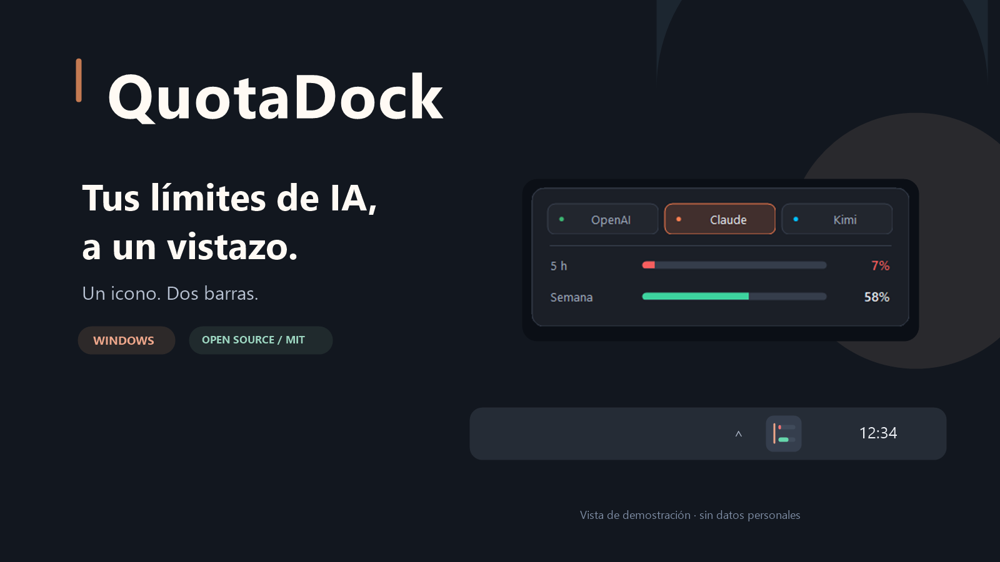

Piconera Tech · recurso de integración
QuotaDock
Vista previa local de la ficha. Reproduce las clases, proporciones y colores del porfolio sin modificar la web publicada.


QuotaDock
Tus cuotas de IA junto al reloj. Un icono, dos barras y tus proveedores, sin ruido.
Imágenes y datos de demostración. La aplicación es para Windows y sus binarios actuales no están firmados. Esta página no se publica automáticamente.